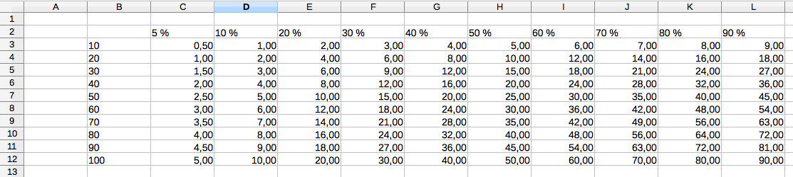

5. Procent
En undervisningsgrupp består av 26 studerande. 14 st studerande cyklar till skolan på morgonen. Hur många procent av undervisningsgruppens studerande cyklar till skolan på morgonen?
I en annan undervisningsgrupp som består av 22 studerande kommer 12 st med cykel till skolan. Vilken grupp har den större procentuella andelen som kommer med cykel till skolan?
Lösning
För grupp 1 gäller att 14 kommer med cykel av hela gruppen på 26 studerande. Andelen är \(\dfrac{14}{26}\).
För grupp 2 gäller att 12 kommer med cykel av hela gruppen på 22 studerande. Andelen är \(\dfrac{12}{22}\).
För att jämföra dessa så kan vi antingen göra dem liknämniga, 286, eller så kan vi utföra divisionen.
Då vi gör dem liknämniga får vi \(\dfrac{154}{286}\) och \(\dfrac{156}{286}\).
Utför vi divisionen får vi talen \(0,5384\ldots\) och \(0,5454\ldots\).
Hur vi än räknar märker vi att i den andra undervisningsgruppen är det en större andel som kommer med cykel till skolan.
För att jämföra sammansättningar av olika mängder kan man använda sig av bråk. Problemet med att använda sig av bråk är att det inte är så lätt att få en klar och snabb uppfattning över hur stor del som det handlar om. För att lösa detta problem använder man sig av procent. Med procent låter man nämnaren ha värdet 100. Genom att alltid bilda kvoter med samma nämnare är det lättare att göra jämförelserna.
Ursprunget för ordet procent är latinets per cent, per hundra. Det betyder att för 5 % så har vi följande samband: \(5\;\% = \dfrac{5}{100} = 0,05\).
För att bilda den procentuella andelen av något jämför vi alltid med grundmängden, allt som vi har. Så som vi gjorde i introduktionen.
När vi kommer längre och räknar med procent så är grundidén vid procenträkning \(p \cdot a = b\) där
- \(p\) är procenten som decimaltal. 1 + procenten vid ökning, 1 - procenten vid minskning.
- \(a\) är kapitalet/priset i början
- \(b\) är kapitalet/priset i slutet.
Exempel 1 Peters nettolön efter 24 % skatt var 851,20 €. Hur stor var hans bruttolön?
Lösning
Vi söker \(a\) som är hans bruttolön. För \(a\) gäller att
\(\begin{array}{rcl} a(1-0,24) & = & 851,20 \\ a & = & \dfrac{851,20}{0,76} = 1120 \text{ €}\\ \end{array}\)
Ett alternativt sätt att räkna är \((1 \pm \dfrac{p}{100})a=b\). Nackdelen med denna formel är att du får en ekvation med nämnaren 100. Fördelen är att den fungerar i vått som torrt. Här är beteckningen samma som ovan, \(p\) procenten som heltal, \(a\) kapitalet/priset i början och \(b\) kapitalet/priset i slutet.
Uppgifter
I riksdagsvalet 2015 röstade 2 968 459 personer på olika partier. Bestäm den den procentuella andelen och antal röster för partierna i tabellen. Avrunda den procentuella andelen till en hundradel (två decimaler) och andel röster till heltal.
Parti Antal röster Procentuell andel Centern 626 218 Sannfinländarna 524 054 Samlingspartiet 18,20 SDP 490 102 De gröna 8,53 Vänstern 7,13 SFP 144 802 Kristdemokraterna 3,54 Parti Antal röster Procentuell andel Centern 626 218 21,10 Sannfinländarna 524 054 17,65 Samlingspartiet 540260 18,20 SDP 490 102 16,51 De gröna 253210 8,53 Vänstern 211651 7,13 SFP 144 802 4,88 Kristdemokraterna 105083 3,54 - Ett parti malm, vars massa är 540 kg, innehåller 470 g koppar. Bestäm den procentuella andelen koppar i malmpartiet.
Den procentuella andlenen är \(\dfrac{0,47 \text{ kg}}{540 \text{ kg}} = 0,000870\ldots\) som är 0,09 %.
- Hur många procent större är \(\dfrac{3}{2}\) än \(\dfrac{3}{4}\)?
Vi får \(\dfrac{\dfrac{3}{2}}{\dfrac{3}{4}} = 2\).
Betyder att \(\dfrac{3}{2}\) är 100 % större än \(\dfrac{3}{4}\).
Då man räknade ut hur många procent något är av något annat fick man följande svar, kvoter. Kombinera rätt kvot med rätt tolkning av procenten. Välj mellan värdena
12341,251,501,7500,250,500,75Tal Procentuell förändring En minskning om 100 %. En minskning om 75 %. En minskning om 50 %. En minskning om 25 %. Ingen föränding. En ökning om 25 %. En ökning om 50 %. En ökning om 75 %. En ökning om 100 %. En ökning om 200 %. En ökning om 300 %. Tal Procentuell förändring 0 En minskning om 100 %. 0,25 En minskning om 75 %. 0,50 En minskning om 50 %. 0,75 En minskning om 25 %. 1 Ingen föränding. 1,25 En ökning om 25 %. 1,50 En ökning om 50 %. 1,75 En ökning om 75 %. 2 En ökning om 100 %. 3 En ökning om 200 %. 4 En ökning om 300 %. - Ett prov på 110,0 g innehöll kol, syre och kväve. Andelen kol var 11,5 % och massan för syret var 78,2 g. Bestäm både andelen (i procent) och massan för kvävet med en tiondels noggrannhet.
Den procentuella andelen syre är \(\dfrac{78,2 \text{ g}}{110 \text{ g}} = 0,71090\ldots\).
Kvävets procentuella andel är \(100 - 11,5 - 71,1 = 17,4\) %.
Massan är \(110 \cdot 0,174 = 19,14\) g.
- Ett par jeans såldes med 35 % rabatt och kostade då 65 €. Vad var priset före rabatten?
Vi har följande ekvation
\(\begin{array}{rcll} a\cdot (1-0,35 ) & = & 65 \\ 0,65 a & = & 65 & \| /0,65\\ a & = & \dfrac{65}{0,65} = 100 \end{array}\)
Alltså 100 €.
Gör på LibreOffice en fil som räknar ut procenterna för olika summor. Du kan använda dig av egna summor och procenter eller ta exempel från tablellen nedan.
5 % 10 % 20 % 30 % 40 % ... 90 % 10 € 20 € 30 € ... 100 € Kom ihåg att använda dig av formler! Börja med = och skriv sedan in formeln. Vill du klona formeln drar du från den lilla kvadraten nere till höger.
Vi får något i stil med

- Enligt statistikcentralen var antalet arbetslösa 264 000 och andelen arbetslösa 9,3 % i Finland i juni 2016. Bestäm storleken på den totala arbetskraften i Finland.
Vi får att
\(\begin{array}{rcll} a\cdot 0,093 & = & 264 000 & \| /0,093\\ a & = & \dfrac{264000}{0,093} = 2838709,7 \end{array}\)
Alltså 2 840 000 eller 2 800 000 stycken.
I tabellen nedan ser du antal röster, avrundat till tusental, för de fyra största partierna i kommunalvalet 2017. 2017 gavs 2 570 000 röster och 2012 gavs 2 500 000 röster.
Antal röster Procent av rösterna Parti 2017 2012 2017 2012 Kolumn A Kolumn B Kolumn C Samlingspartiet 532 000 546 000 20,7 % 21,8 % SDP 498 000 488 000 19,4 % 19,5 % Centern 451 000 465 000 17,5 % 18,6 % De Gröna 320 000 213 000 12, 5 % 8,5 % - Fyll i hur många procentenheter som understödet ändrades i Kolumn A.
- Fyll i den procentuell föränding i antal röster som partierna fick i Kolumn B.
- Fyll i den procentuell föränding i understöd som partierna fick i Kolumn C.
Använd dig av en tiondels decimals noggrannhet och beteckna minskning med negativa värden och ökning med positiva värden.
Antal röster Procent av rösterna Parti 2017 2012 2017 2012 Kolumn A Kolumn B Kolumn C Samlingspartiet 532 000 546 000 20,7 % 21,8 % -1,1 % -2,6 % -5,2 % SDP 498 000 488 000 19,4 % 19,5 % -0,1 % 2,0 % -0,7 % Centern 451 000 465 000 17,5 % 18,6 % -1,1 % -3,0 % -5,7 % De Gröna 320 000 213 000 12, 5 % 8,5 % 4,0 % 50,2 % 46,1 % - Vad beror skillnaderna på i Kolumn A, Kolumn B och Kolumn C? Varför ger inte Kolumn B och Kolumn C samma värde?
Kolumn B och C ger inte samma värde eftersom antaler som röstat är olika från år till år.
- Utgående från datan i tabellen. Vem kan kalla sig för att ha segrat i kommunalvalet 2017 ? Kom ihåg att motivera din åsikt.
Lösningen
- Ett prov på 110,0 g innehöll kol, syre och kväve. Andelen kol var 11,5 % och massan för syret var 78,2 g. Bestäm både andelen (i procent) och massan för kvävet med en tiondels noggrannhet.